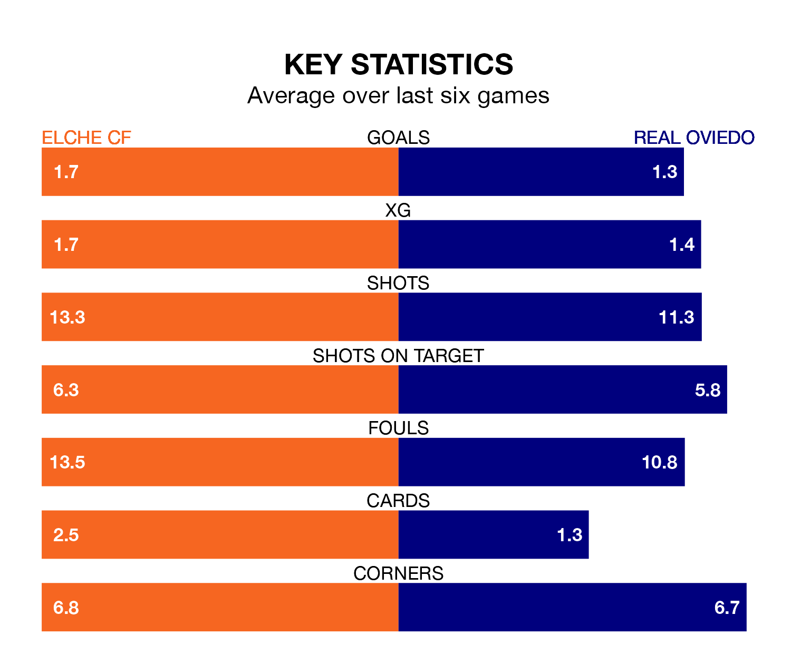

Two of the Segunda División's meanest defences go head-to-head at the Estadio Manuel Martínez Valero on Friday, when Elche CF host Real Oviedo.
Only two sides – Leganés and SD Huesca – have conceded fewer goals than Elche to date: the home side have let in just 29 goals in 33 games.
Oviedo have conceded the same number of goals in 33 games, giving them the joint-third tightest back line so far this season.
Key to Elche's home form has been Edgar Badia, who has allowed 0.89 goals past him per 90 minutes, compared to 0.85 for Leo Román in the opposite net.
In the last 10 years, Elche and Oviedo have played each other on nine occasions. Elche won two of them, Oviedo five, and they drew twice.
On average, Elche scored 1.1 goals and Oviedo 1.7 in those matches.
Their last meeting was on December 15, when Oviedo won 3-2 at home.
Elche are fifth in the table after 33 games, of which they have won 15 and drawn eight, earning 53 points.
Oviedo are two places behind the home side in seventh, with 13 wins and 12 draws putting them on 51 points.
The visitors' Santiago Colombatto is among the league's most creative players, racking up eight assists in 28 appearances so far this season, and holding second spot in the Segunda División's assist charts.
For Elche, Arnau Puigmal has set up the most goals, having laid on three assists in five games.
Elche are in reasonable form in the Segunda División, with four wins and two losses from their last six games.
With three wins and a draw over that period, Oviedo's form is slightly worse – they have taken 10 points from 18, compared to the hosts' 12.
Elche's last match was on Sunday, a 1-0 loss against Racing Club de Ferrol.
Oviedo beat Villarreal B 2-1 last time out, also on Sunday, with Alemão on the scoresheet.
Updated: 16:41 (UTC), 04/04/24